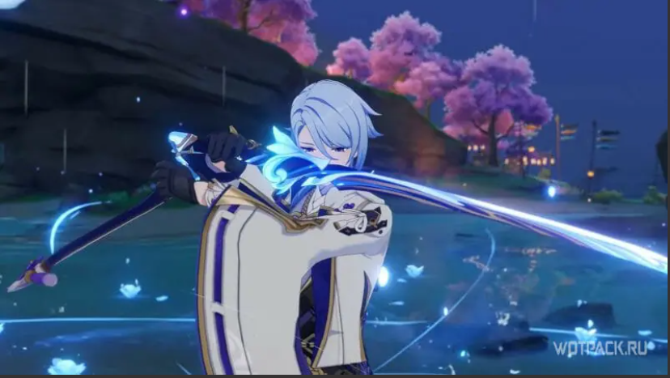
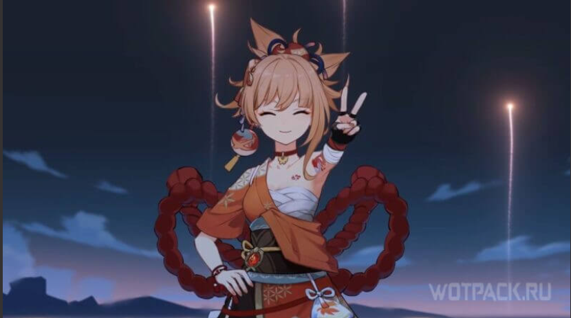
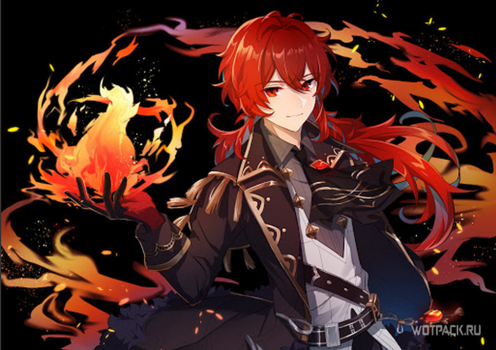
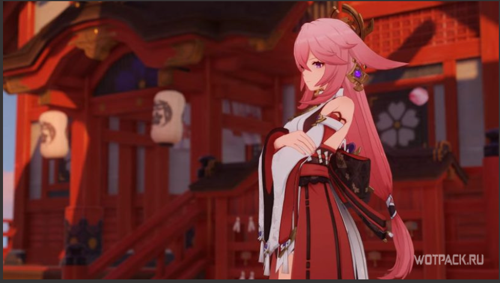
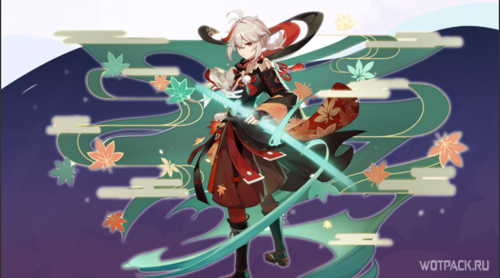
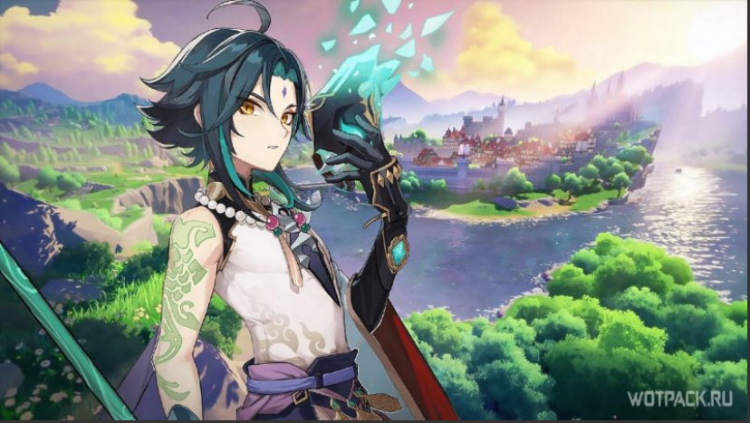

Здесь публикуются только самые лучшие сборки персонажей!
Гайд на Камисато Аято
Аято хорошо впишется в отряды, основанные на реакциях. Важно, чтобы второй DPS герой мог поддерживать статус на врагах длительное время. К примеру, замечательным выбором станет его сестра Аяка благодаря способностям, охватывающим большую область. Ее может заменить Гань Юй, которая имеет похожий взрыв стихий. В паре с ультой Аято, все враги будут постоянно стоять на месте.
Также учитывайте бонус обычных атак, который дает Взрыв стихий. Для полной эффективности персонажи в отряде должны по максимуму использовать его. Сюда идеально подходит Еимия. Под Е-шкой она бьет обычными атаками с Пиро-инфузией. Соответственно, урон возрастет не только от бафа, но и создаваемых реакций.
Если отдать Аято роль поддержки, в команду потребуется поставить батарейку, так как его ульта стоит 80 единиц энергии. К примеру, Диона или Райдэн. Также хорошим выбором станет Кокоми, которая и надамажит и подлечит, и зальет энергии. Главное успевать подбирать частицы за Аято.

Гайд на Ёимию
Еимия способна занимать позицию как мейн-дамагера, так и бурст-саппорта:
В случае основного дд при составлении билда стоит фокусироваться на увеличении собственного урона лучницы, делая ее основным ДПС в команде.
В качестве второстепенной поддержки Еимия также обладает неплохой ультой, особенно против группы врагов. Благодаря ее взрыву стихии, который наносит Пиро-урон по площади (с помощью команды) и повышает силу атаки союзников.

Гайд на Дилюка
Дилюк наиболее полно раскрывается как основной Пиро дамагер, соответственно, отлично сочетается с персонажами поддержки стихий Крио и Гидро для созданий реакций 1-го порядка. Может собираться как в полную Пиро сборку, играя от реакций, так и в билды, направленные на нанесение единоличного урона при использовании баффов от саппортов — это зависит от команды, выпавших статов в артефактах и предпочтительного геймплея.

Гайд на Яэ Мико
Основное назначение Яэ в команде — нанесение урона. Неважно занимает она роль основного дд, второстепенного дд или же бурстовика в револьверную группу — упор необходимо делать на дамаг. На приоритет тех или иных характеристик влияет лишь то, через какие реакции Мико играет. Например, в команде с Дендро через Вегетацию мастерство стихий важнее, чем криты. В отрядах через Обострение — уже имеют значение сила атаки и криты.

Гайд на Кадзуху
Как и другие Анемо-персонажи самурай реализует собственную эффективность за счет поглощения элементов, а также усиления союзников ультой и пассивными талантами:
При его возвышении увеличиваются показатели мастерства стихий, кроме того большая часть скиллов зависит именно от МС, поэтому в саппорт позиции упор рекомендуется делать на данный стат.
Кадзуха может занимать и роль сап-дд, в этом случае акцент можно сделать и на криты/силу атаки, Анемо урон.

Гайд на Сяо
Сяо – типичный атакующий DPS-боец. На него играет весь отряд, что заставляет при формировании билда усиливать лучшие стороны персонажа и прикрывать слабые. В частности, к интересующим нас статам относятся:
Шанс/Крит. урон;
бонус к Анемо урону;
% силы атаки;
перезарядка энергии.
Нужно лишь подобрать подходящее снаряжение, удовлетворяющее данным требованиям.

Гайд на Итто
Аратаки Итто – это основной Гео-дамагер, которому не нужна элементальная реакция для нанесения огромного урона. Хотя его ульта зависит от показателя защиты, существует распространенное заблуждение, что в этом случае нет необходимости в силе атаки. Однако это не совсем так, поскольку в расчет конечного урона данная характеристика также включается.